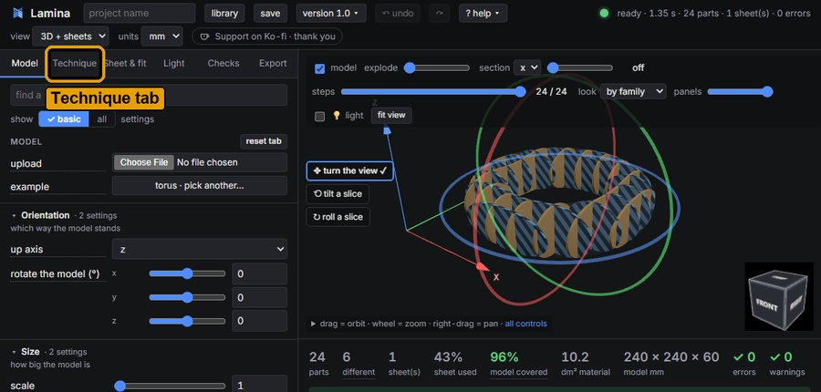
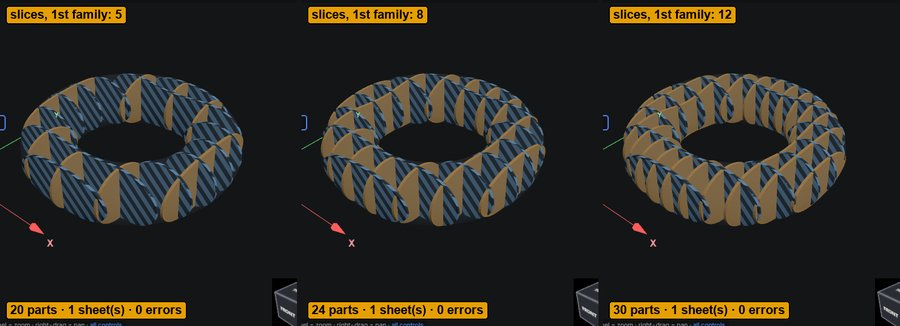
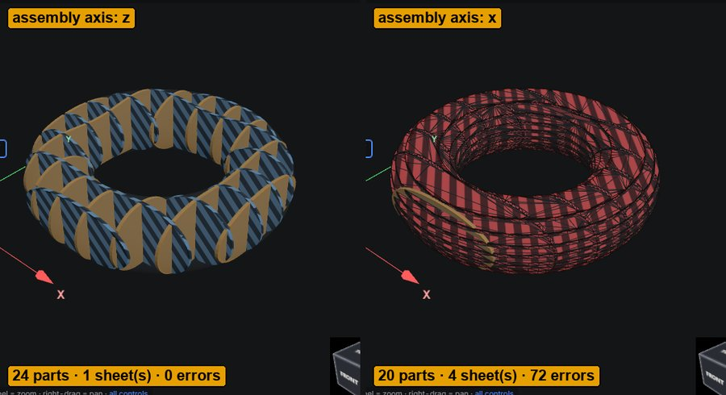
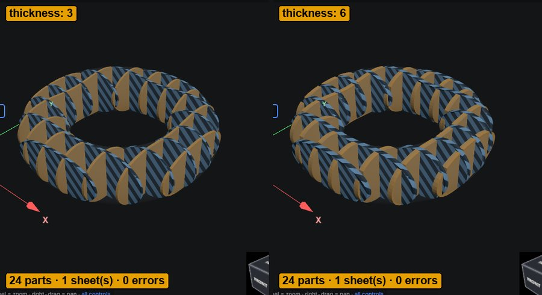
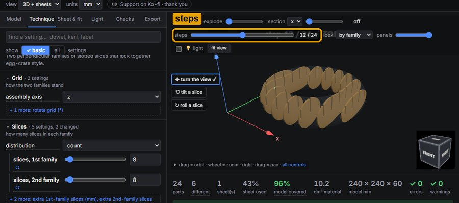

How to make an interlocking slice sculpture
Two families of flat slices cross at right angles and slot into each other, like an egg crate. People also call it a waffle or a slice form. Cardboard works well for big pieces, and plywood or acrylic for strong ones. This guide uses Lamina, a free laser slicer that runs in your browser.
- 1. Start hereThe steps every job has: your model, its size, the checks, the files. Open
- 2. Your machineLaser, router or 3D printer, the material and its thickness. Open
- 3. Your technique: this pageThe settings of Interlocked Slices, and what each one changes.
Which shapes work
One family of slices goes in from above and the other from below. So each slice must have a straight way in. A torus works, because every vertical line meets its tube once. A head with ears above the skull on the same lines does not, and Lamina's insertion check says so. For such a shape, use stacked slices or radial slices instead.
Set the technique
Every picture on this page shows one model: the torus that the link opens. An orange ring with a label marks the control to use. To use your own model, upload it on the Model tab: Start here shows how.
- Open Lamina on Interlocked Slices. It opens with the torus
cut in two families of slices. Click the Technique tab.

- Set assembly axis. The 1st family of slices goes in from above along this axis, and the 2nd family
from below.

- In distribution, keep count to set the number of slices in each family. Pick
distance to set the space between the slices instead.

- Type the number of slices in slices, 1st family and slices, 2nd family.

- Read the errors and warnings under the 3D view after each change. Where a region would float,
auto-fix adds a crossing slice and says so.

What each setting changes
Each picture shows the same torus from the same side, with one setting changed. The label at the bottom gives the counts that Lamina shows under the 3D view.
slices, 1st family and 2nd family
The number of slices in each direction. More slices show more of the surface.
They also give more parts and more slots to cut. On this torus, the 2nd family has 8 slices: 5 slices in the 1st family make 20 parts, 8 make 24, and 12 make 30. All of them fit one 600 × 400 mm sheet.

assembly axis
The direction the slices slide in. Both families stand along this axis.
It decides if the model can be put together. Along z, every slice of the torus slides in: 0 errors. Along x, a slice meets the tube twice on its way in, and Lamina gives 72 errors such as Z-1 cannot slide into its slot. Choose the axis that every part of your shape is open to.

thickness (on the Sheet & fit tab)
The thickness of your sheet. Every slot is cut as wide as this number.
The number of parts stays: 24 in 3 mm and in 6 mm. The slices are thicker and the slots are wider.

More settings
| Setting | What it does | It changes |
|---|---|---|
| distribution | count: a number of slices for each family. distance: one slice every so many mm. | With distance, a larger model gets more slices. With count, it gets wider spaces. |
| vary the spacing | You draw the distance between slices along the model, for each family. | More slices where the shape changes fast, fewer where it does not. |
| slot depth split (Sheet & fit) | Where two crossing slices meet. 0.5 cuts each slot half way. | At 0.7, the slot of the 1st family goes 70 % of the way and the slot of the 2nd family 30 %. |
| slot offset (Sheet & fit) | How much wider than the sheet every slot is cut. | How hard the slices go together. The fit test finds the number. |
| auto-fix (Checks) | Adds a crossing slice where a region would float. | The number of slices can be higher than you typed. It never deletes a piece of your model. |
Lamina calculates the depth of each slot at each crossing from the mesh itself. So a hollow or an uneven shape notches correctly. You can also move, tilt or delete one slice in the 3D view, and the slots follow.
Then: the machine, the checks and the files
These steps are the same for every technique, so they have their own pages.
- On the Sheet & fit tab, choose your machine, your material and its thickness: Laser, router or 3D printer. For a CNC router, the inside-corner relief lets the round bit cut every slot corner deep enough.
- Correct every error, cut the fit test, and download the files: Start here, steps 10 to 13.
- Slide the 1st family in from above, then the 2nd family from below. To see the order, drag steps
over the 3D view.

Made with interlocked slices

Giant dragon head
by jarkien
More in the gallery. For rings in three directions on a sphere, an egg or a box, see the band lattice.